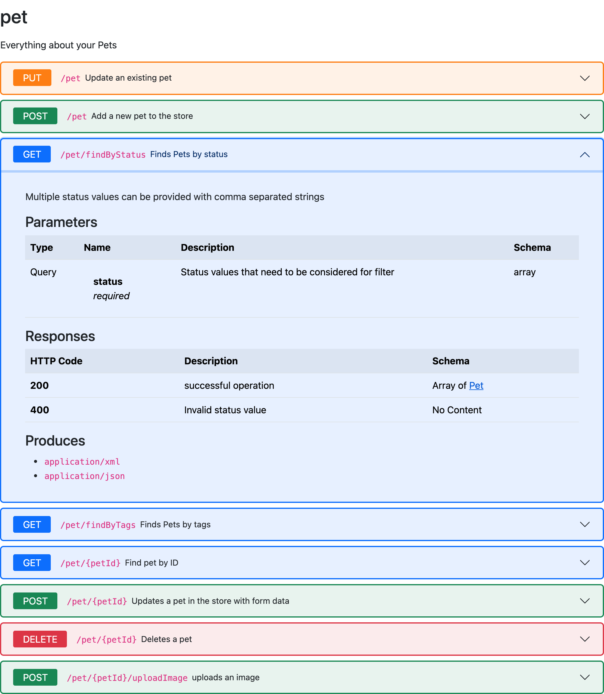

Swagger Support
Documentation and examples for rendering Swagger operations as Bootstrap accordions.
DITA Bootstrap Swagger is a DITA-OT plug-in that extends the DITA Bootstrap HTML output. It renders each operation generated by fox.jason.passthrough.swagger as a collapsed Bootstrap accordion item.

pet operations of the Swagger Petstore, with one operation expandedInstalling the DITA Bootstrap Swagger plug-in
Use the dita command to add the plug-in and its dependencies to your DITA Open Toolkit installation:
dita install fox.jason.extend.css
dita install org.dita-bootstrap.html
dita install fox.jason.passthrough.swagger
dita install org.dita-bootstrap.swaggerUsing
To mark a file to be passed through for Swagger processing, label the <topicref> with
@format="swagger" within the <map> as shown:
<map>
...etc
<topicref format="swagger" href="swagger.json"/>
</map>The Swagger file is converted to a *.dita file and added to the build job. The title of the
generated <topic> is the root name of the file, with any underscores replaced by
spaces.
Specify the html5-bootstrap format when building output with the dita command. Each operation is rendered as a collapsed Bootstrap accordion item:
dita --input=path/to/your.ditamap --format=html5-bootstrap